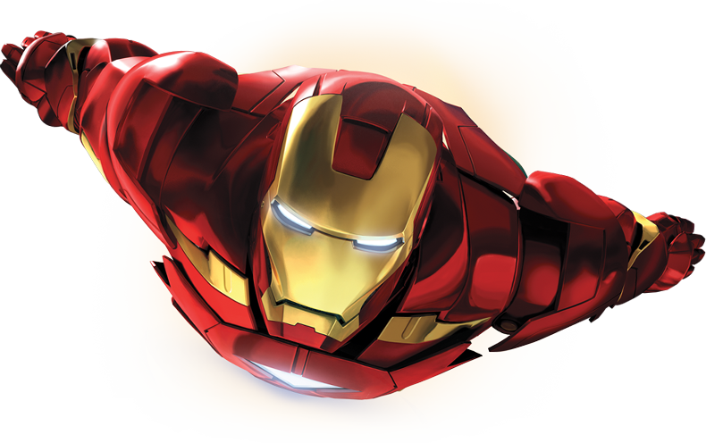
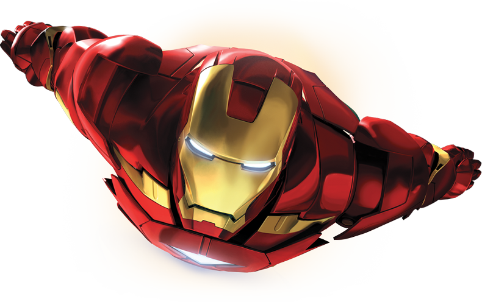

Iron Man is a fictional superhero
appearing in American comic books published by Marvel Comics. The character was co-created by writer and editor Stan Lee, developed by scripter Larry Lieber, and designed by artists Don Heck and Jack Kirby. The character made his first appearance in Tales of Suspense #39 (cover dated March 1963), and received his own title in Iron Man #1 (May 1968). Also in 1963, the character founded the Avengers alongside Thor, Ant-Man, Wasp and the Hulk.